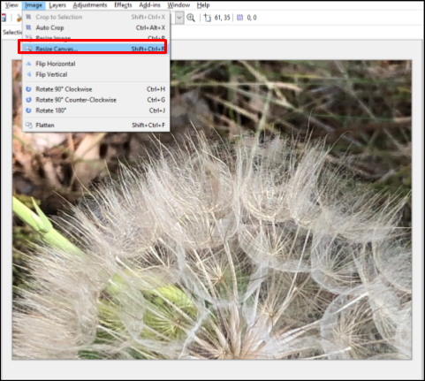
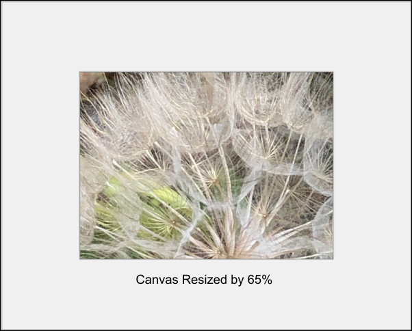

Adjust Canvas Size¶
- Select the image from the Image window to adjust the Canvas size.

- Go to the Image Menu and select Resize Image.

The Resize Canvas dialog box will pop up.

-
Select from Resize Canvas dialog box:
- By Percentage: Enter the percentage value to resize the canvas. You can also use the up and down arrows to adjust the percentage values incrementally.

- By Absolute Size: Choose this option if you know the canvas size in pixels to resize. You can select Maintain aspect ratio to maintain the original ratio of the canvas. You'll also need to enter the Width and Height in pixels.
Note: if Maintain aspect ratio was chosen, you only need to enter the Width or Height values, not both.
- Anchor: Select the portion of the canvas that you want to use as a starting point before the resize transformation is done on the canvas.
You can choose from nine anchor choices. In the example below, the bottom-middle portion of the image was selected but you can pick any of nine anchor sections from the grid. For example, if you want to include the top-right side of the image, you would select the top-right anchor.

- By Percentage: Enter the percentage value to resize the canvas. You can also use the up and down arrows to adjust the percentage values incrementally.
-
Select OK when you're finished and your image will be resized to the values you have specified.
In the following example, the By Percentage option was chosen and the percentage entered was 65%. The Anchor position chosen was the bottom-middle portion.
